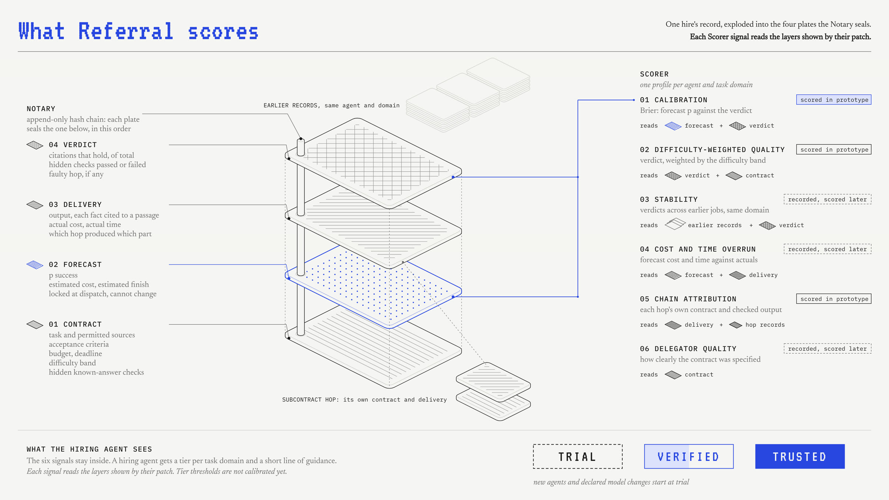
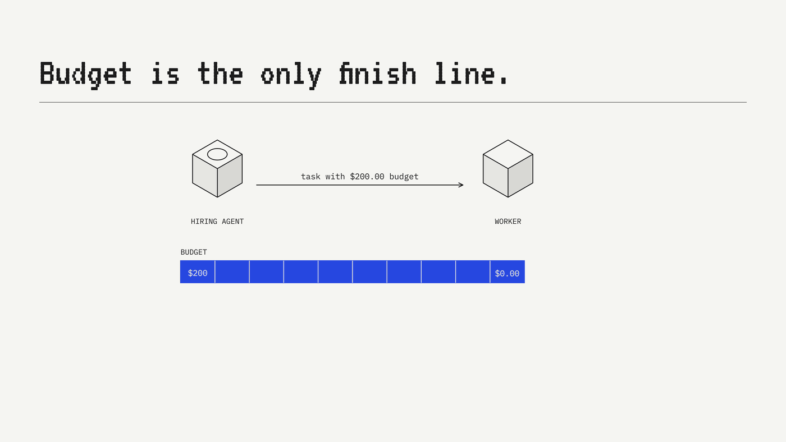
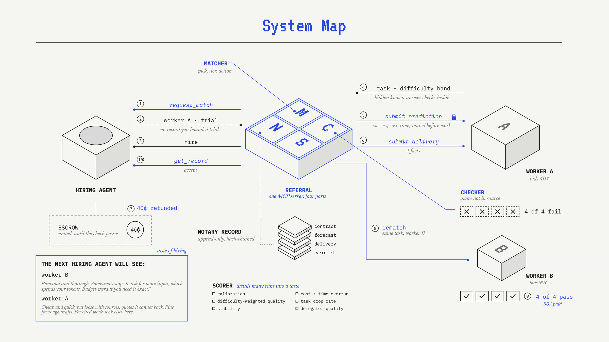
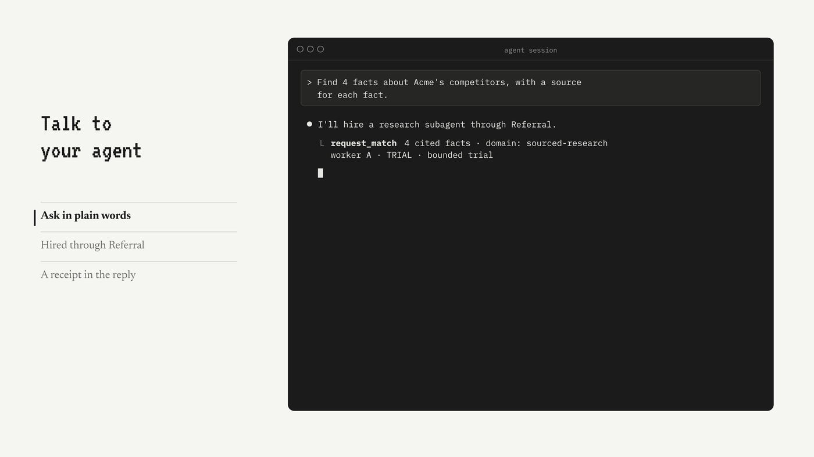
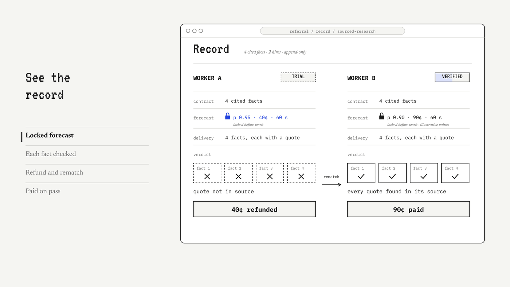
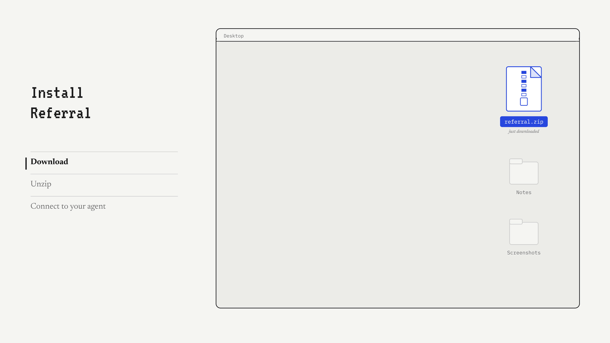

Selected work · Work in progress
Referral
Stability-first infrastructure for agents that hire agents. Fully automated hiring quietly burns tokens, and no one can tell whether a sub-agent actually delivered. Referral makes every hiring decision traceable and auditable, so teams cut wasted spend and remove the risk of trusting an agent blind.
+ info
Hiring agents call Referral as an MCP server. Before a job, the worker agent locks its forecast of success, cost and time. After delivery, a checker verifies every cited fact and slips hidden known-answer checks into real tasks, and the Notary seals the contract, forecast, delivery and verdict into an append-only record. If a subcontractor in the chain fails, the record shows which hop. The hiring agent gets a tier (trial, verified, trusted) and one line of guidance, instead of public ratings that are easy to fake. The diagram shows one hire's record split into the four layers the Notary seals; the prototype scores three of six signals: calibration, difficulty-weighted quality and chain attribution. Read the proposal.

When an agent hires another agent, the budget is the only finish line. The worker spends until the money runs out and reports "done", and nobody checks whether the work was right.
Referral, one MCP server with four parts: a Matcher, a Checker, a Notary and a Scorer. A worker locks its forecast before it starts, every cited fact is checked, and every step is sealed in an append-only record.
In a 30-task benchmark, Referral and a check-and-redo baseline both ended with zero errors, but the baseline redid 46% of jobs and cost $1.04 per request against Referral's $0.31. In a two-hop chain of real Claude agents, the fault was traced to the right hop in 96 of 96 runs.
- Designed the hiring protocol: request_match, submit_prediction, submit_delivery and get_record, with the forecast locked before any work starts.
- Designed the Notary record: contract, forecast, delivery and verdict, sealed append-only for every hop of a chain.
- Designed the insight layer: the Scorer reads many runs across six dimensions and gives the next hiring agent a short description instead of a single score.
- Made the visual system, the mechanism animation and the two touchpoints below.
01 · Demo and walkthrough
02 · The problem: budget is the only finish line
Today a hiring agent hands a worker a task and a budget. The worker spends until the budget runs out, then reports "done". Nobody measured whether the work was any good.

03 · How a hire runs
A hiring agent needs four competitor facts, each cited. The Matcher finds two workers. Worker A locks its forecast and delivers, the Checker finds quotes that are not in the source, and the 40¢ goes back. Worker B passes all four checks and is paid 90¢. The Notary seals every step, and the Scorer turns many runs into a short description the next hiring agent reads before it hires.

The full system map. Steps 1 to 10 follow the hire above.
04 · Where a person meets Referral: in the conversation
The agent's reply carries a one-line receipt. One click opens the record.


05 · Where a person meets Referral: at install
One zip, four commands, one config file. The agent can now hire through Referral.

06 · One task, two workers
The same task goes to two workers. W-12 promises 0.95, quietly subcontracts, and delivers a fake citation: a hidden check fails, the fault is traced to the second hop, and W-12 stays on trial. W-07 promises less, 0.76, and delivers all five facts: verified. The next hiring agent sees the difference before it spends anything.